94/280physical training results produced
46available within-seed comparisons
8independently reviewed training pairs
0/20completed revised OOD pairs; 5 active
What to tell your advisor
What we know
- CQL Hopper: 62.98 → 56.79 final; average learning curve nearly tied.
- CQL Walker: 80.13 → 63.88 final; average learning curve also slightly lower.
- TD3 Walker: 77.25 → 82.90 final, but lower average during learning and only 8/20 final-reset wins.
- Reviewed ReBRAC: Hopper nearly tied across 3 seeds; Walker mean improves, but the seed effects are +4.98, −2.99 and +33.64.
What this means
There is no consistent benefit established yet. The new CQL/TD3 pairs have one training seed, and endpoint gains can differ from performance during learning.
The OOD experiment asks a different question: does a larger BCA warning identify actions that actually lead to worse outcomes? Return curves and fitting losses cannot answer that on their own.
Evidence status: TD3 Walker is independently reviewed. The new CQL comparisons await that review; CQL Hopper also uses different host/BCA hardware. Preliminary atlas rows remain explicitly labeled.
Full explanation and advisor answers · Per-seed results CSV · Exact plotted data and provenance
FIGURE 01
New completed learning curves
Read left to right through 1M updates. Every periodic mean is shown without smoothing. The diamonds use a separate final reset bank. CQL training results are preliminary pending independent review; TD3 Walker is reviewed. CQL Hopper compares a local RTX 5070 Ti host run with an A100 BCA run. These are policy-performance results, not action-level OOD results.
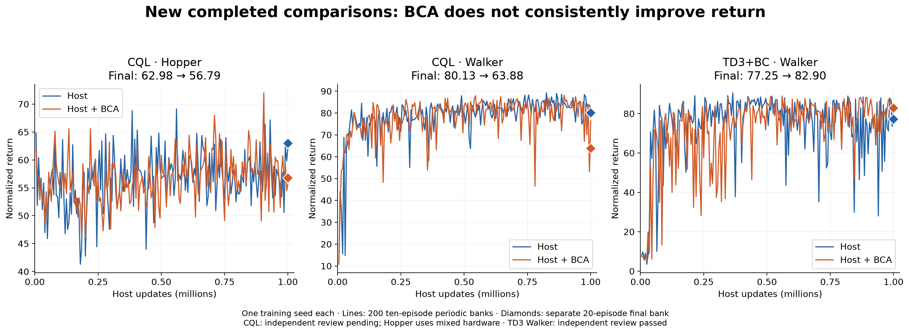
FIGURE 02
Endpoint versus performance during learning
Positive values favor BCA. TD3 Walker improves the final mean but has a lower average periodic score; it wins only 8 of 20 paired final resets. These are distinct questions, not conflicting calculations. One training seed per pair cannot estimate training-seed uncertainty. CQL figures await independent review.
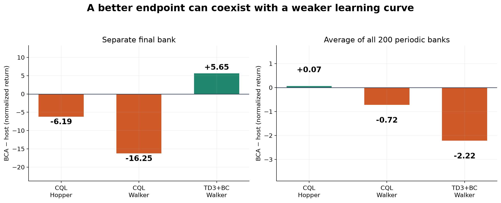
FIGURE 03
Final-reset differences
Each dot compares host and BCA from the same final reset seed, with fixed trained policies. All 20 resets appear in their recorded order. TD3 Walker has a positive mean despite only 8 positive resets; CQL Walker has a negative mean despite 11 positive resets. This is variation over environment resets, not 20 independent training seeds, and does not isolate action-level harm.
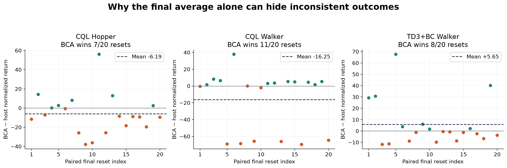
FIGURE 04
TD3+BC learning-curve atlas
The same completed training seeds are used for both methods in each colored comparison. Shading describes variation among the available seeds; it is not a confidence interval or final five-seed conclusion. Unpaired completed runs are gray dashed context. Most atlas rows await the complete independent source/data/checkpoint audit; exact status appears in the per-seed table. No best-seed or best-checkpoint selection.
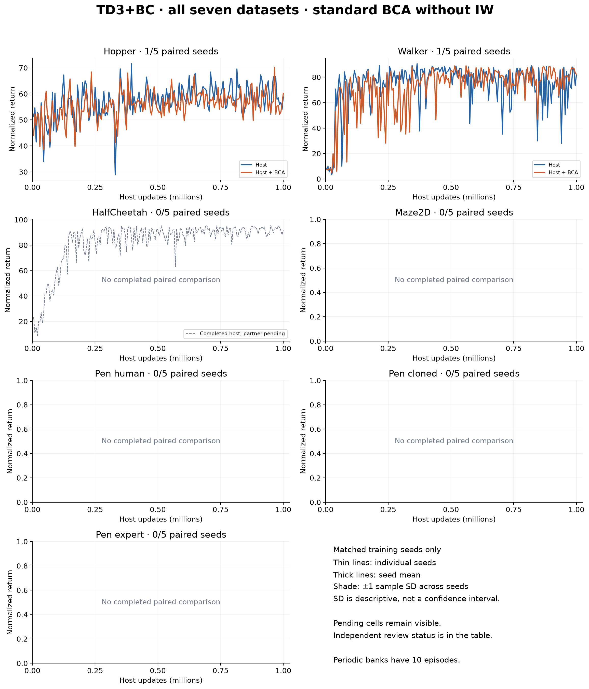
FIGURE 05
CQL learning-curve atlas
The same completed training seeds are used for both methods in each colored comparison. Shading describes variation among the available seeds; it is not a confidence interval or final five-seed conclusion. Unpaired completed runs are gray dashed context. Most atlas rows await the complete independent source/data/checkpoint audit; exact status appears in the per-seed table. No best-seed or best-checkpoint selection.
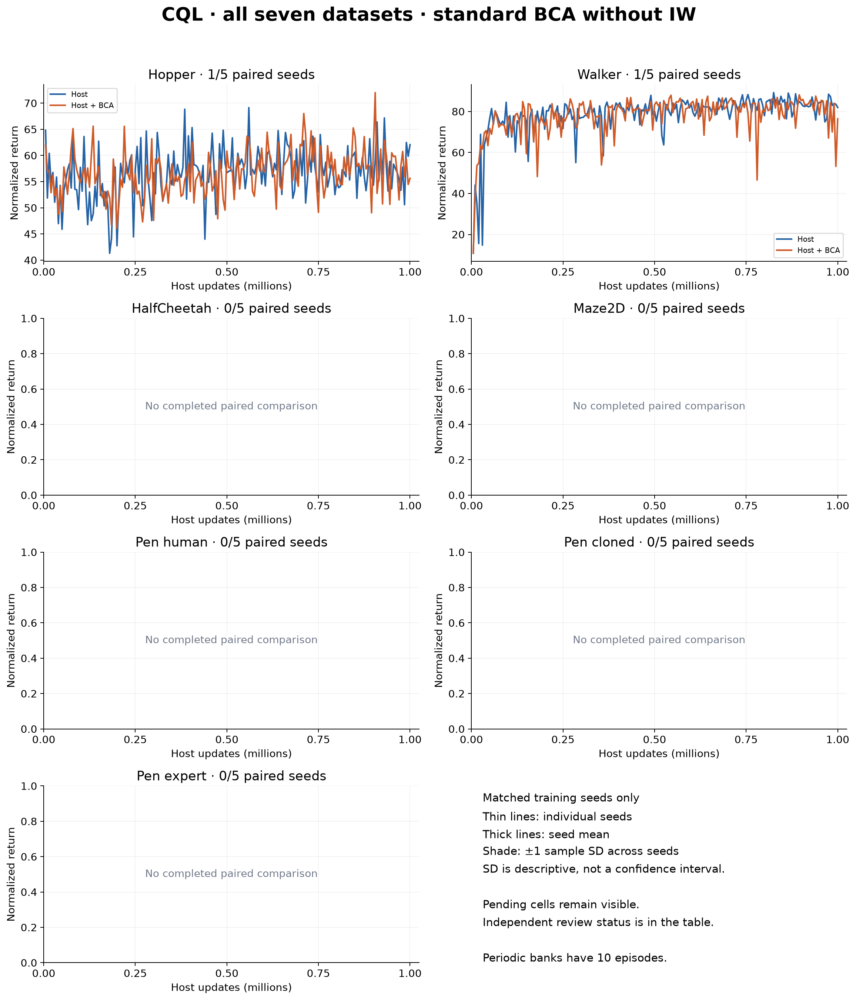
FIGURE 06
ReBRAC learning-curve atlas
The same completed training seeds are used for both methods in each colored comparison. Shading describes variation among the available seeds; it is not a confidence interval or final five-seed conclusion. Unpaired completed runs are gray dashed context. Most atlas rows await the complete independent source/data/checkpoint audit; exact status appears in the per-seed table. No best-seed or best-checkpoint selection.
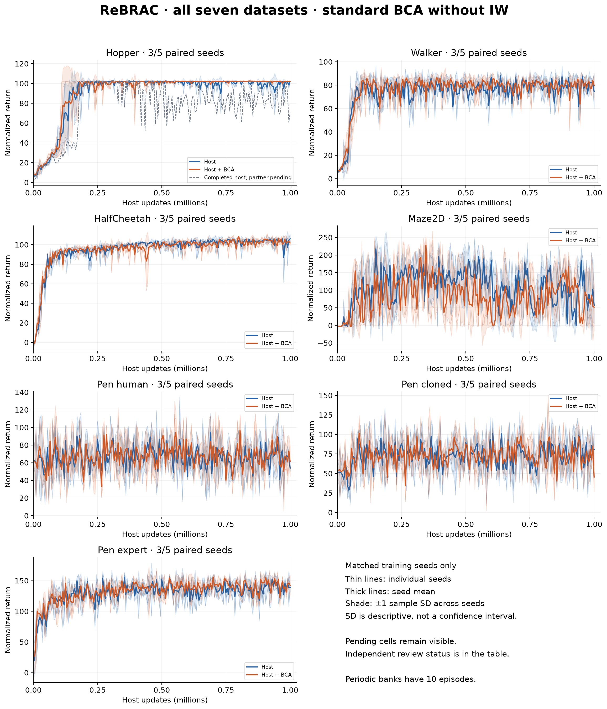
FIGURE 07
IQL learning-curve atlas
The same completed training seeds are used for both methods in each colored comparison. Shading describes variation among the available seeds; it is not a confidence interval or final five-seed conclusion. Unpaired completed runs are gray dashed context. IQL compares its paired actors sharing the same learned Q/V; the separately trained host is shown only as dotted gray context. Most atlas rows await the complete independent source/data/checkpoint audit; exact status appears in the per-seed table. No best-seed or best-checkpoint selection.
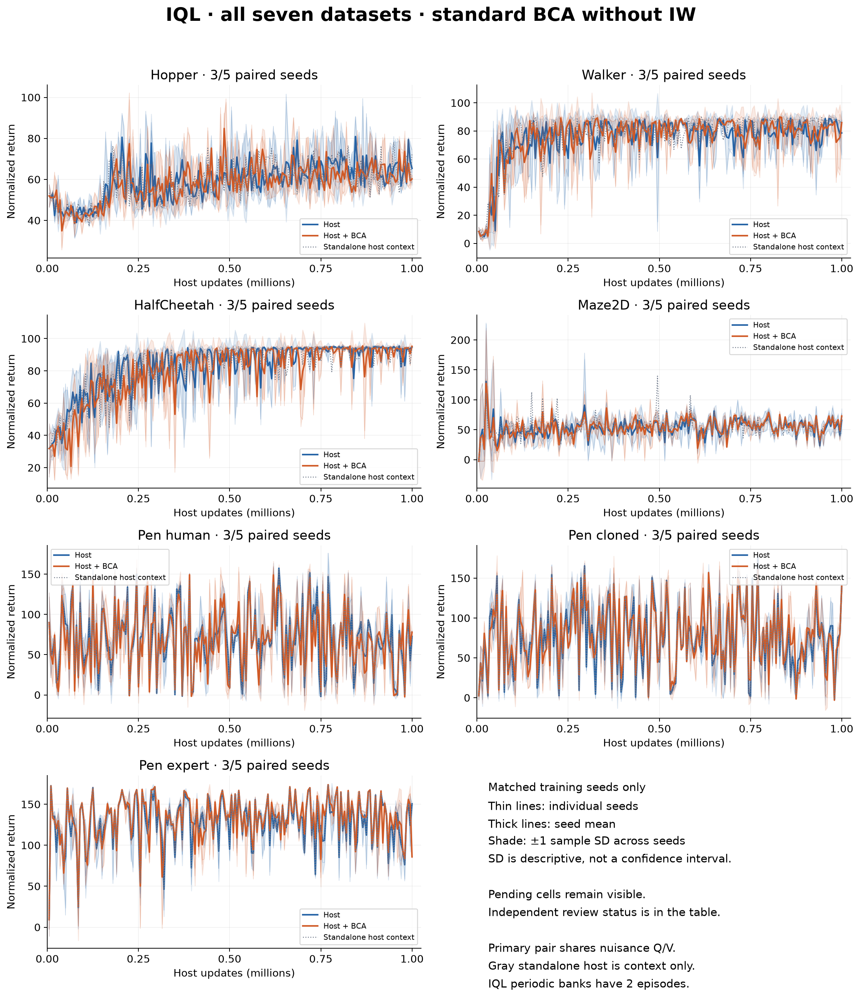
FIGURE 08
Reviewed ReBRAC training-seed comparisons
Each line connects the two final 20-episode means for one paired training seed. Agreement across seeds is stronger evidence than a single endpoint; three seeds remain short of the planned five. The lines describe whole-policy performance, not whether BCA correctly identifies harmful actions.
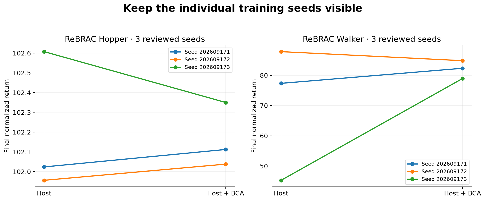
FIGURE 09
TD3 Walker calibration during training
198 recorded refreshes retain both Bayesian and conformal radii; the effective radius is their maximum. The actor’s behavior-cloning penalty is multiplied by the BCA signal. The scale and critic plots use audited 1,000-update block means; actor statistics exclude skipped actor updates. Successful fitting does not show that width ranks OOD harm correctly.
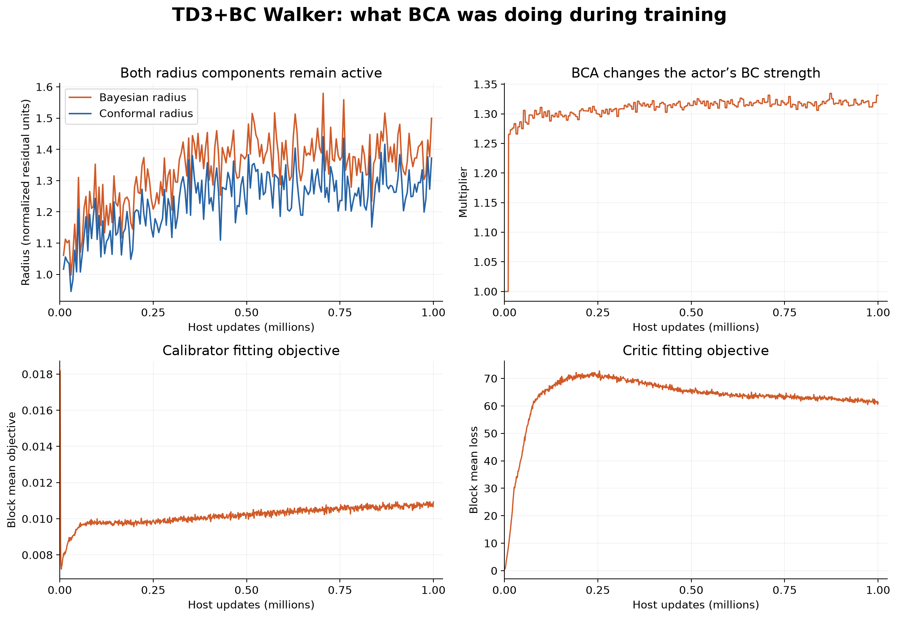
FIGURE 10
CQL Q and loss diagnostics
These are 1,000 sparse last-row snapshots per completed run, not means over all updates. Q1 is evaluated on recorded dataset actions. Different Q/loss trajectories can help locate a mechanism to investigate, but cannot establish which proposed actions cause harm. Original CQL host failure/recovery remains preserved; the new CQL runs still await independent review.
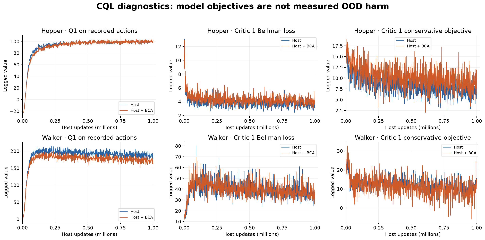
FIGURE 11
CQL calibration signal
Sparse last-row snapshots show the multiplier used on CQL’s conservative objective and the fitting objective. Both runs record 198 successful posterior refreshes. Historical numerical radii are not in these CQL refresh records, so no radius history is fabricated. Sampled fit acceptance is not a complete per-update acceptance log; independent final checkpoint-counter review is still pending. A nonzero multiplier alone does not demonstrate useful harm ranking.
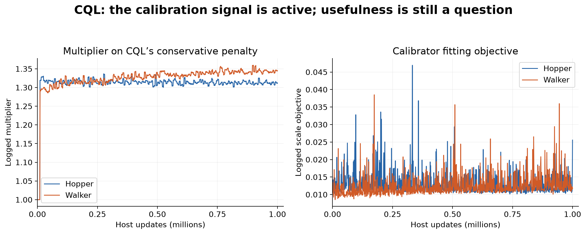
FIGURE 12
OOD execution progress
Four cluster CPU workers and one local continuation worker are running the five pairs. Bar length counts recorded explicit transitions, including engineering checks and collection; different episode lengths prevent direct conversion to percent complete. TD3 includes its preserved original prefix plus its continuation. No revised pair is complete, so final harm-ranking, coverage and regret findings are unavailable. No live scientific database was read for this report.
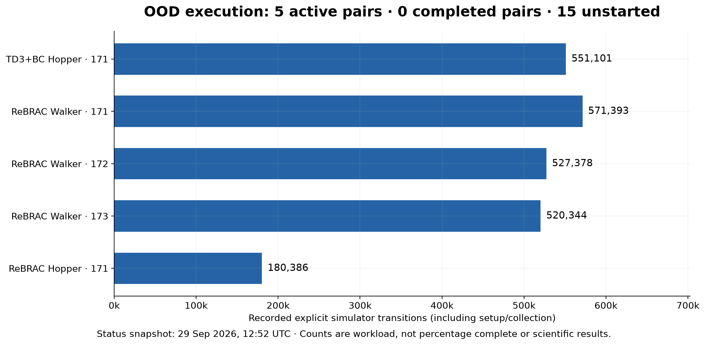
All available paired results
Positive differences favor BCA. Final and learning-time differences answer different questions. IQL uses the two actors within the same shared-Q/V run. Review-pending rows are descriptive saved outputs, not accepted OOD evidence.
| Host | Dataset | Training seed | Host final | BCA final | Final difference | Curve difference | Evidence |
|---|
| TD3+BC | Hopper | 202609171 | 65.22 | 65.93 | +0.71 | -1.48 | Reviewed |
| TD3+BC | Walker | 202609171 | 77.25 | 82.90 | +5.65 | -2.22 | Reviewed |
| CQL | Hopper | 202609171 | 62.98 | 56.79 | -6.19 | +0.07 | Review pending |
| CQL | Walker | 202609171 | 80.13 | 63.88 | -16.25 | -0.72 | Review pending |
| ReBRAC | Hopper | 202609171 | 102.02 | 102.11 | +0.09 | +0.51 | Reviewed |
| ReBRAC | Hopper | 202609172 | 101.96 | 102.04 | +0.08 | -1.77 | Reviewed |
| ReBRAC | Hopper | 202609173 | 102.61 | 102.35 | -0.26 | +4.03 | Reviewed |
| ReBRAC | Walker | 202609171 | 77.33 | 82.31 | +4.98 | +0.94 | Reviewed |
| ReBRAC | Walker | 202609172 | 87.81 | 84.82 | -2.99 | +3.13 | Reviewed |
| ReBRAC | Walker | 202609173 | 45.29 | 78.93 | +33.64 | +1.67 | Reviewed |
| ReBRAC | HalfCheetah | 202609171 | 111.04 | 101.74 | -9.29 | +0.20 | Review pending |
| ReBRAC | HalfCheetah | 202609172 | 101.23 | 96.50 | -4.73 | -1.56 | Review pending |
| ReBRAC | HalfCheetah | 202609173 | 103.21 | 103.88 | +0.66 | +0.31 | Review pending |
| ReBRAC | Maze2D | 202609171 | 124.58 | 42.16 | -82.42 | -22.69 | Review pending |
| ReBRAC | Maze2D | 202609172 | 64.67 | 157.88 | +93.21 | -17.40 | Review pending |
| ReBRAC | Maze2D | 202609173 | 12.10 | 12.03 | -0.07 | -31.42 | Review pending |
| ReBRAC | Pen human | 202609171 | 70.54 | 60.09 | -10.45 | -3.42 | Review pending |
| ReBRAC | Pen human | 202609172 | 56.96 | 51.15 | -5.81 | +4.67 | Review pending |
| ReBRAC | Pen human | 202609173 | 49.16 | 55.66 | +6.50 | +1.44 | Review pending |
| ReBRAC | Pen cloned | 202609171 | 68.34 | 78.49 | +10.15 | +4.07 | Review pending |
| ReBRAC | Pen cloned | 202609172 | 81.55 | 70.21 | -11.34 | -3.01 | Review pending |
| ReBRAC | Pen cloned | 202609173 | 68.46 | 71.37 | +2.91 | +1.75 | Review pending |
| ReBRAC | Pen expert | 202609171 | 135.27 | 151.80 | +16.53 | +6.71 | Review pending |
| ReBRAC | Pen expert | 202609172 | 146.92 | 148.91 | +1.99 | +4.24 | Review pending |
| ReBRAC | Pen expert | 202609173 | 148.44 | 142.67 | -5.77 | -1.98 | Review pending |
| IQL | Hopper | 202609171 | 65.75 | 65.63 | -0.12 | -0.56 | Review pending |
| IQL | Hopper | 202609172 | 64.80 | 60.23 | -4.57 | -1.30 | Review pending |
| IQL | Hopper | 202609173 | 64.36 | 61.61 | -2.75 | -1.31 | Review pending |
| IQL | Walker | 202609171 | 79.76 | 83.86 | +4.09 | +1.43 | Review pending |
| IQL | Walker | 202609172 | 80.01 | 74.39 | -5.62 | +1.44 | Review pending |
| IQL | Walker | 202609173 | 79.37 | 85.45 | +6.07 | -1.80 | Review pending |
| IQL | HalfCheetah | 202609171 | 93.48 | 88.27 | -5.21 | -1.19 | Review pending |
| IQL | HalfCheetah | 202609172 | 87.66 | 92.79 | +5.13 | -2.03 | Review pending |
| IQL | HalfCheetah | 202609173 | 94.04 | 91.33 | -2.71 | -3.35 | Review pending |
| IQL | Maze2D | 202609171 | 71.20 | 61.67 | -9.52 | -3.63 | Review pending |
| IQL | Maze2D | 202609172 | 61.84 | 65.77 | +3.93 | -1.14 | Review pending |
| IQL | Maze2D | 202609173 | 45.08 | 62.63 | +17.55 | +6.55 | Review pending |
| IQL | Pen human | 202609171 | 71.73 | 69.90 | -1.83 | +1.04 | Review pending |
| IQL | Pen human | 202609172 | 69.81 | 67.33 | -2.47 | -0.38 | Review pending |
| IQL | Pen human | 202609173 | 74.98 | 67.30 | -7.68 | -5.76 | Review pending |
| IQL | Pen cloned | 202609171 | 81.99 | 79.63 | -2.37 | +0.21 | Review pending |
| IQL | Pen cloned | 202609172 | 76.10 | 81.24 | +5.14 | +6.07 | Review pending |
| IQL | Pen cloned | 202609173 | 77.36 | 85.96 | +8.59 | +4.98 | Review pending |
| IQL | Pen expert | 202609171 | 136.61 | 137.66 | +1.05 | +2.35 | Review pending |
| IQL | Pen expert | 202609172 | 139.78 | 143.43 | +3.65 | +3.86 | Review pending |
| IQL | Pen expert | 202609173 | 139.39 | 140.53 | +1.14 | +2.59 | Review pending |
What we do next—and what each outcome means
- Finish and verify the active OOD pairs. Retain matched simulator states, fixed continuation streams and the declared numerical gates.
- Compare warnings with measured harm within each state. Good ranking supports a useful warning signal in that panel. Poor ranking points to a signal–harm mismatch, even if the scale fitting succeeds.
- Compare action choices and candidate-set regret. Good ranking with worse decisions points toward how the host uses the signal. Regret is relative to tested candidate actions, not the unknown optimal policy.
- Test the calibration target separately. Nominal coverage concerns residual bands under stated assumptions. It is not the fraction of reliance on the old policy, and it is not automatically coverage of true return.
- Then test the specified importance-weighted extension. First establish the standard-BCA limitation. Correct weighted conformal prediction needs the declared distribution ratio, weighted quantile and test-point mass; weighted scale fitting alone is insufficient. Do not tune coverage to improve this baseline after seeing its outcomes.
Scope and reproducibility
The report uses all available completed saved curves, no score-based selection, no smoothing and no new training or simulator queries. Older campaigns and the main PDF are unchanged. The one recovered original CQL exit 1 remains preserved. IQL produces two actors in each BCA run, explaining why there are 115 trajectories from 94 physical runs.
- HalfCheetah: halfcheetah-medium-expert-v2
- Hopper: hopper-medium-v2
- Maze2D: maze2d-large-v1
- Pen cloned: pen-cloned-v1
- Pen expert: pen-expert-v1
- Pen human: pen-human-v1
- Walker: walker2d-medium-replay-v2
All hosts target 1M host updates. TD3+BC and ReBRAC have 500k delayed actor updates. IQL periodic banks use 2 episodes; other hosts use 10. Final banks use 20. Shading is descriptive ±1 sample SD across matched training seeds, not a confidence interval.
Numerical and artifact verification · Complete analysis · Paired results